Rice is the staple food for the Meitei people, forming the base of most meals.
RICE
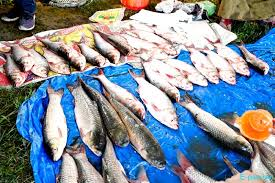
Fish is a key ingredient in Meitei cuisine, given the abundance of rivers and lakes in Manipur. Freshwater fish is preferred, and it is often smoked, dried, or fermented.
FISH
POPULAR DISHES
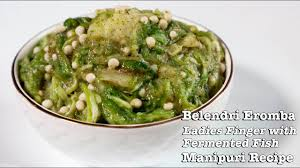
Eromba is a traditional dish made with boiled vegetables mashed with fermented fish (Ngari) and seasoned with red chilies and herbs. It is often garnished with aromatic leaves like cilantro or maroi nakupi (a type of garlic chive).There are also various types of "Eromba" according to the ingredient used.
EROMBA
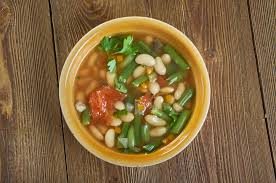
Kangshoi is a light vegetable stew made with seasonal vegetables, coarsely chopped, and cooked with fermented fish, ginger, garlic, and green chilies. It is usually served hot with rice.
KANGSHOI
Nga-Thongba or Manipuri-styled Fish Curry is one of the main dishes of the Meitei.It is served in almost every Events or Occasion as the main dish.
NGA-THONGBA
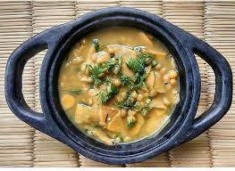
Ooti is a comforting dish made with green peas or black-eyed peas, some green leaves veggies and rice. It has a slightly tangy flavor and is often enjoyed during festivals.
OOTI
POPULAR SNACK
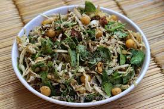
Singju is a popular salad made with a variety of fresh, finely chopped vegetables like cabbage, lotus stem, banana flower, and herbs, mixed with a spicy and tangy dressing of roasted chickpea powder, fermented fish, and red chili.
SINGJU
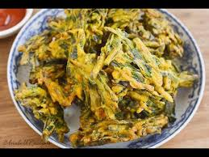
Bora is a Meitei Manipuri ethnic food item, prepared with oil fried vegetables. Other recipes may include fish flavor or prawn flavor. It is one of the most popular evening side dish in the Indian state of Manipur, especially among the Manipuri ethnicity.
BORA
SIDE DISHES
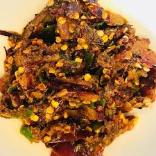
A spicy chutney made with fresh green or red chilies, often pounded with ngari (fermented fish), roasted tomatoes, and herbs. It is a common accompaniment to meals.
MOROK-METPA
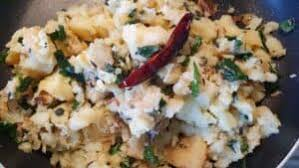
A spicy dry chutney-type side-dish made with Potato,fresh green or red chilies and pounded ngari (fermented fish) by mixing it together. It is a common accompaniment to meals.
ALOO-KANGMET
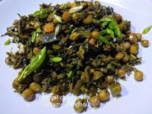
A dry-fried dish made with a variety of vegetables, or meat, seasoned with traditional spices. It is a versatile side dish that can be made with different ingredients based on availability.
KANGHOU
UNIQUE INGREDIENTS
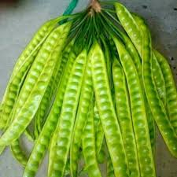
A type of tree bean used in salads and curries, known for its strong smell and distinctive taste.
YONGCHAK
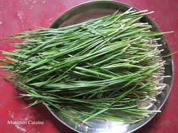
Aromatic herbs similar to garlic chives and Chinese chives, respectively, used for garnishing and flavoring.
MAROI-NAKUPPI
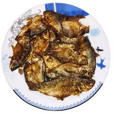
Ngari is fermented fish, typically made from small freshwater fish varieties. The fermentation process gives it a strong, pungent aroma and a deep, savory flavor, making it a staple in Manipuri households.Ngari is more than just an ingredient; it holds cultural significance for the Meitei people.Ngari is a source of pride for the community